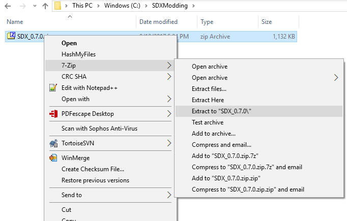

SDX is used to compile the individual SDX scripts into Mods.dll, add hooks into the Assembly-CSharp.dll.
Download SDX 0.7.x from here or here (mirror)
Copy the SDX.0.7.1.zip to your Modding Folder ( C:\SDXModding\ )
Right click on SDX.0.7.1.zip, and choose to extract to SDX 0.7.0.

That's it!
Created with the Personal Edition of HelpNDoc: Full-featured EBook editor